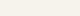

← catalogue
La passerelle suspendue

- genre : platformer
- jeu : opencade-ferraille
- licence : MIT (verified)
- source : https://forgejo.pingfr.duckdns.org/david/Opencade.git@172156af3849e6061e3706166a991c77cf95528a:src/engines/ferraille/levels.ts @ 00813410f426 — ferraille/ferraille-12.json
- dimensions : 5×1
- mécaniques : —
- versions publiées : —
- contenu :
a87fe6a280f59a9c